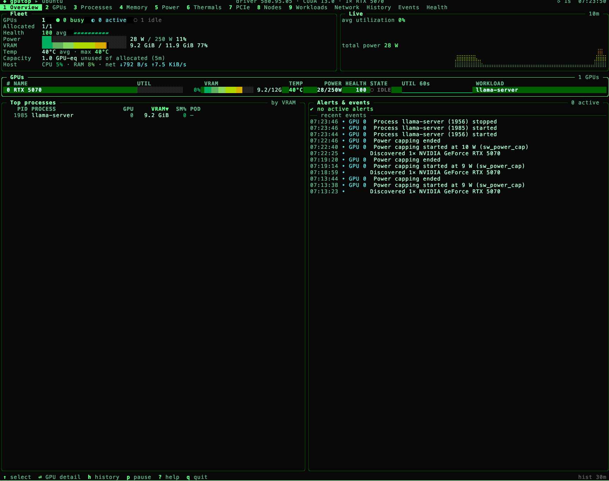

01
One clear fleet view
Utilization, VRAM, temperature, power, health and state — per GPU, in a single dense overview.
Open-source GPU observability
A fast, keyboard-first terminal monitor for GPU infrastructure. See what is happening now — and rewind to understand what happened before.
Allocated 8/8
Health 96 avg
Power 3,926 W / 5,600 W
VRAM 447 GiB / 640 GiB
Built for the console
Everything you need to understand GPU behavior, arranged for fast scanning and quick investigation.
01
Utilization, VRAM, temperature, power, health and state — per GPU, in a single dense overview.
02
Scrub metrics and events through a configurable on-disk time machine. Find the moment a system changed.
03
Follow GPU to process, container, pod and workload. Spot idle allocations and stragglers.
04
Health scores and events surface Xids, throttling, ECC, PCIe and NVLink issues with context.
What gputop tracks
gputop combines official vendor metrics with clearly-labelled derived insights. Unsupported values stay N/A, never misleading zeroes.
Made to investigate
Sixteen focused views, one fast workflow.

Start in seconds
Grab the latest release for Linux or macOS.
Make it executable and put it on your PATH.
Launch the TUI — or try the full demo without hardware.
$ curl -fLo gputop https://github.com/gputop/gputop/releases/latest/download/gputop-linux-amd64
$ chmod +x gputop && sudo install gputop /usr/local/bin/
$ gputop --demoHave Go 1.25+? Run go install github.com/gputop/gputop/cmd/gputop@latest.
One binary, many ways to use it
gputopInteractive GPU terminalgputop --demoExplore simulated GPUsgputop --once --jsonOne machine-readable snapshotgputop --serviceHTTP API + Prometheus agentgputop --remote gpu-node-01Connect to a remote agentgputop --print-configView effective configurationDocumentation
Guides for running gputop locally, in production, and across your GPU fleet.
Open source